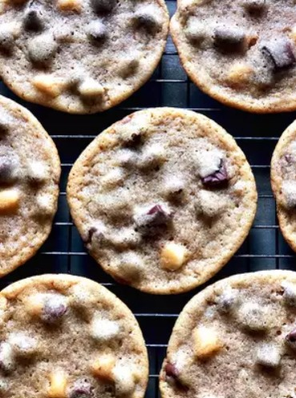

Triple Chocolate Chunk Cookies

Triple Chocolate chunk cookies?
Large or small, these triple chocolate chunk cookies are crispy on the
outside and and have 3 types of chocolate on the chewy inside.
Ingredients
- 3/4 cup brown sugar
-
1/2 cup unsalted butter, at room temperature
- 1/2 cup white sugar
- 1 teaspoon salt
- 1 large egg
- 1 teaspoon vanilla extract
- 1 1/2 cup all-purpose flour
- 3/4 teaspoon baking soda
- 1 cup milk chocolate chips
- 1 (3 ounce) dark chocolate, cut into chunks
- 3 tablespoons white chocolate chips
Steps
-
Combine brown sugar, butter, white sugar, and salt in a large bowl; beat
with an electric mixer until a creamy, deep brown mixture forms. Add egg
and vanilla; beat until mixture lightens and becomes smooth, 10 to 15
seconds.
-
Mix flour and baking soda together in a separate bowl. Add slowly to the
wet ingredients until mostly incorporated, but some white traces of
flour remain. Fold in milk chocolate, dark chocolate, and white
chocolate using a spatula, not the mixer. Cover the dough and
refrigerate for at least 30 minutes, or up to 48 hours.
-
Preheat the oven to 350 degrees F (175 degrees C) when ready to bake.
-
Divide cold dough into 2 1/4-ounce portions and place on a cookie sheet.
-
Bake in the preheated oven until the edges start to look golden brown
and crispy, 10 to 12 minutes. Do not overbake; the centers will not look
fully done. Cool until cookies are set, about 30 minutes.
Back home